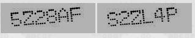
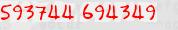
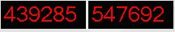
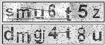
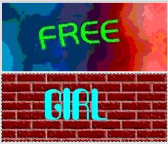
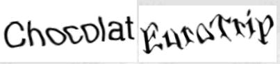
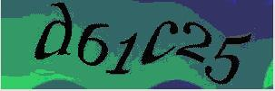
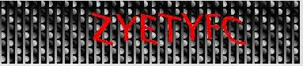
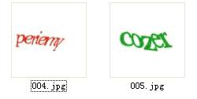
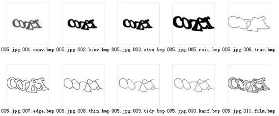

==Ph4nt0m Security Team==
Issue 0x02, Phile #0x09 of 0x0A
|=---------------------------------------------------------------------------=|
|=-----------------------=[ 如何识别高级的验证码 ]=------------------------=|
|=---------------------------------------------------------------------------=|
|=---------------------------------------------------------------------------=|
|=----------------------=[ By moonblue333 ]=------------------------=|
|=-------------------=[ <moonblue333_at_hotmail.com> ]=--------------------=|
|=---------------------------------------------------------------------------=|
一、验证码的基本知识
1. 验证码的主要目的是强制人机交互来抵御机器自动化攻击的。
2. 大部分的验证码设计者并不得要领，不了解图像处理，机器视觉，模式识别，人工智能
的基本概念。
3. 利用验证码，可以发财，当然要犯罪：比如招商银行密码只有6位，验证码形同虚设，计
算机很快就能破解一个有钱的账户，很多帐户是可以网上交易的。
4. 也有设计的比较好的，比如Yahoo,Google,Microsoft等。而国内Tencent的中文验证
码虽然难，但算不上好。
二、人工智能，模式识别，机器视觉，图像处理的基本知识
1)主要流程：
比如我们要从一副图片中，识别出验证码；比如我们要从一副图片中，检测并识别出一张
人脸。 大概有哪些步骤呢？
1.图像采集：验证码呢，就直接通过HTTP抓HTML，然后分析出图片的url，然后下载保存就
可以了。 如果是人脸检测识别，一般要通过视屏采集设备，采集回来，通过A/D转操作，存为
数字图片或者视频频。
2.预处理：检测是正确的图像格式，转换到合适的格式，压缩，剪切出ROI，去除噪音，灰度
化，转换色彩空间这些。
3.检测：车牌检测识别系统要先找到车牌的大概位置，人脸检测系统要找出图片中所有
的人脸（包括疑似人脸）；验证码识别呢，主要是找出文字所在的主要区域。
4.前处理：人脸检测和识别，会对人脸在识别前作一些校正，比如面内面外的旋转，扭曲
等。我这里的验证码识别，“一般”要做文字的切割
5.训练：通过各种模式识别，机器学习算法，来挑选和训练合适数量的训练集。不是训练
的样本越多越好。过学习，泛化能力差的问题可能在这里出现。这一步不是必须的，有些识
别算法是不需要训练的。
6.识别：输入待识别的处理后的图片，转换成分类器需要的输入格式，然后通过输出的类
和置信度，来判断大概可能是哪个字母。识别本质上就是分类。
2)关键概念：
图像处理：一般指针对数字图像的某种数学处理。比如投影，钝化，锐化，细化，边缘检测，
二值化，压缩，各种数据变换等等。
1.二值化：一般图片都是彩色的，按照逼真程度，可能很多级别。为了降低计算复杂度，
方便后续的处理，如果在不损失关键信息的情况下，能将图片处理成黑白两种颜色，那就最好
不过了。
2.细化：找出图像的骨架，图像线条可能是很宽的，通过细化将宽度将为1，某些地方可能
大于1。不同的细化算法，可能有不同的差异，比如是否更靠近线条中间，比如是否保持联通
行等。
3.边缘检测：主要是理解边缘的概念。边缘实际上是图像中图像像素属性变化剧烈的地
方。可能通过一个固定的门限值来判断，也可能是自适应的。门限可能是图像全局的，也可
能是局部的。不能说那个就一定好，不过大部分时候，自适应的局部的门限可能要好点。被
分析的，可能是颜色，也可能是灰度图像的灰度。
机器视觉：利用计算机来模式实现人的视觉。 比如物体检测，定位，识别。按照对图像
理解的层次的差别，分高阶和低阶的理解。
模式识别：对事物或者现象的某种表示方式（数值，文字，我们这里主要想说的是数值），
通过一些处理和分析，来描述，归类，理解，解释这些事物，现象及其某种抽象。
人工智能：这种概念比较宽，上面这些都属于人工智能这个大的方向。简单点不要过分
学院派的理解就是，把人类的很“智能”的东西给模拟出来协助生物的人来处理问题，特别是
在计算机里面。
三、常见的验证码的破解分析
以http://libcaca.zoy.org/wiki/PWNtcha这里PWNtcha项目中的资料为例分析，各种验
证码的破解。（方法很多，仅仅从我个人乍看之下觉得可行的方法来分析）
1)Authimage

使用的反破解技巧：
1.不连续的点组成字符
2.有一定程度的倾斜
设计不好的地方：
1.通过纵横的直方图投影，可以找到字幕区域
2.通过Hough变换，适当的参数，可以找到近似的横线，可以做倾斜矫正
3.字符串的倾斜式面内的，没有太多的破解难度
4.字母宽度一定，大小一定
2)Clubic

使用的反破解技巧：
1.字符是手写体
设计不好的地方：
1.检测切割阶段没有任何技术含量，属于设计的比较丑的
2.只有数字，而且手写体变化不大
3.表面看起来对识别阶段有难度，仔细分析，发现几乎不用任何高级的训练识别算法，就
固定的招某些像素点是否有色彩就够了
3)linuxfr.org
使用的反破解技巧：
1.背景颜色块
2.前景的横线或矩形
设计不好的地方：
1.背景色是单一色块，有形状，通过Region-Growth区域增长来很容易把背景给去掉
2.前景色是标准的线条，色彩单一
3.字母无粘连
4.都是印刷体
4)Ourcolony

使用的反破解技巧：
1.设计的太低级，不屑于去评价
设计不好的地方：
1.这种验证码，设计的最丑，但还是能把菜鸟搞定，毕竟学计算机的少，搞这个破解的更
少，正所谓隔行如隔山
5)LiveJournal

使用的反破解技巧：
1.这个设计略微好点，使用个随机噪音，而且作为前景
2.字母位置粗细都有变化
设计不好的地方：
1.字母没有粘连
2.噪音类型单一
3.通过在X轴的直方图投影，能准确分割字幕
4.然后在Y周作直方图投影,能准确定位高度
5.识别阶段，都是印刷体，简单地很
四、网上的一些高级验证码
1)ICQ

2)IMDb

3)MS MVPS

4)MVN Forum

这些类型是被很多人认为比较难得类型，分析一下可以发现，字符检测，定位和分割都不
是难。 唯一影响识别率的是IMDBb和MVPS这两类，字体变形略大。
总体来说，这些类型的破解也不难，很容易做到50%以上的识别率。
五、高级验证码的破解分析
时间关系，我简单介绍如何利用图像处理和模式识别技术，自动识别比较高级的验证码。
(以风头正劲的Google为例)

1)至少从目前的AI的发展程度看，没有简单的做法能自动处理各种不同的验证码，即使
能力很强，那么系统自然也十分复杂强大。所以，要想在很简单的算法实现比较高级的验证
码破解，必须分析不同验证码算法的特点：
作为一般的图像处理和计算机视觉，会考虑色彩，纹理，形状等直接的特征，同时也考虑
直方图，灰度等统计特征，还考虑FFT，Wavelet等各种变换后的特征。但最终目标都是
Dimension Reduction（降维）然后利于识别，不仅仅是速度的考虑。从图像的角度看，很多系
统都考虑转换为灰度级甚者黑白图片。
Google的图片可以看出，颜色变化是虚晃一枪，不存在任何处理难度。难度是字体变形
和字符粘连。
如果能成功的分割字符，那么后期识别无论是用SVM等分类算法，还是分析笔顺比划走向
来硬识别，都相对好做。
2)图像处理和粘连分割
代码中的part1目录主要完成图像预处理和粘连字符分割
001：将图像从jpg等格式转换为位图便于处理
002：采用Fix/Adaptive的Threshold门限算法，将图片Bin-Value二值化。
（可用003算法）
003：采用OSTU分水岭算法，将图片Bin-Value二值化。
（更通用，大部分时候效果更好）
005：获取ROI感兴趣的区域。
006：Edge Trace边缘跟踪。
007：Edge Detection边界检测。
008：Thin细化去骨架。
009：做了一些Tidy整理。
（这个一般要根据特定的Captcha算法调整）
010：做切割,注意图片中红色的交叉点。
011：将边缘检测和骨干交叉点监测的图像合并。
（合并过程可以做分析: 比如X坐标偏移门限分析，交叉点区域纹理分析，线条走势分析，
等等各种方法，找出更可能的切分点和分离后部件的组合管理。）

代码：（代码质量不高，从其他项目拷贝过来，简单修改的。）
查看代码(./pstzine_09_01.txt)
注： 在这里，我们可以看到，基本的部件（字母是分割开了，但可以造成统一字母的被切
割成多个Component。 一种做法是：利用先验知识，做分割； 另外一种做法是，和第二部分的
识别结合起来。 比如按照从左至右，尝试增加component来识别，如果不能识别而且
component的总宽度，总面积还比较小，继续增加。 当然不排除拒识的可能性。 ）
3)字符部件组合和识别。
part2的代码展示了切割后的字母组合，和基于svm的字符识别的训练和识别过程。
Detection.cpp中展示了ImageSpam检测过程中的一些字符分割和组合，layout的分析和利用
的简单技术。 而Google的验证码的识别，完全可以不用到，仅做参考。
SVM及使用：
本质上，SVM是一个分类器，原始的SVM是一个两类分类的分类器。可以通过1:1或者1:n
的方式来组合成一个多类分类的分类器。 天生通过核函数的使用支持高维数据的分类。从
几何意义上讲，就是找到最能表示类别特征的那些向量（支持向量SV）,然后找到一条线，能最
大化分类的Margin。
libSVM是一个不错的实现。
训练间断和识别阶段的数据整理和归一化是一样的。 这里的简单做法是：
首先：
#define SVM_MAX +0.999
#define SVM_MIN +0.001
其次：
扫描黑白待识别字幕图片的每个像素，如果为0(黑色，是字母上的像素),那么svm中该位
置就SVM_MAX,反之则反。
最后：
训练阶段，在svm的input的前面，为该类打上标记，即是那一个字母。
识别阶段，当然这个类别标记是SVM分类出来。
注意：
如果是SVM菜鸟，最好找一个在SVM外边做了包装的工具，比如样本选择，交叉验证，核函
数选择这些，让程序自动选择和分析。
代码：通过ReginGrowth来提取单个单个的字符，然后开始识别。
查看代码(./pstzine_09_02.txt)
六、对验证码设计的一些建议
1.在噪音等类型的使用上，尽力让字符和用来混淆的前景和背景不容易区分。尽力让坏
人（噪音）长得和好人（字母）一样。
2.特别好的验证码的设计，要尽力发挥人类擅长而AI算法不擅长的。 比如粘连字符的
分割和手写体（通过印刷体做特别的变形也可以）。 而不要一味的去加一些看起来比较复杂
的噪音或者其他的花哨的东西。即使你做的足够复杂，但如果人也难识别，显然别人认为你
是没事找抽型的。
3. 从专业的机器视觉的角度说，验证码的设计，一定要让破解者在识别阶段，反复在低
阶视觉和高阶视觉之间多反复几次才能识别出来。 这样可以大大降低破解难度和破解的准
确率。
七、个人郑重申明
1.这个问题，本身是人工智能，计算机视觉，模式识别领域的一个难题。我是虾米，菜得
不能再菜的那种。作为破解者来说，是出于劣势地位。要做的很好，是很难得。总体来说，我
走的是比较学院派的线路，能真正的破解难度比较高的验证码，不同于网上很多不太入流的
破解方法。我能做的只有利用有限的知识，抛砖引玉而已。 很多OCR的技术，特别是离线手
写体中文等文字识别的技术，个人了解有限的很，都不敢在这里乱写。
2.希望不要把这种技术用于非法用途。
-EOF-